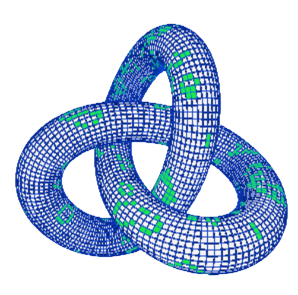

<div class="topnav">
    <div class="logo-container">
      <a class="internal-link logo-link" href="/">
        
      </a>
    </div>
  <a id="garden-title" class="internal-link" href="/">Pensamento Sistêmico</a>
  <div class="topnav-right">
    
    
  </div>
</div>
